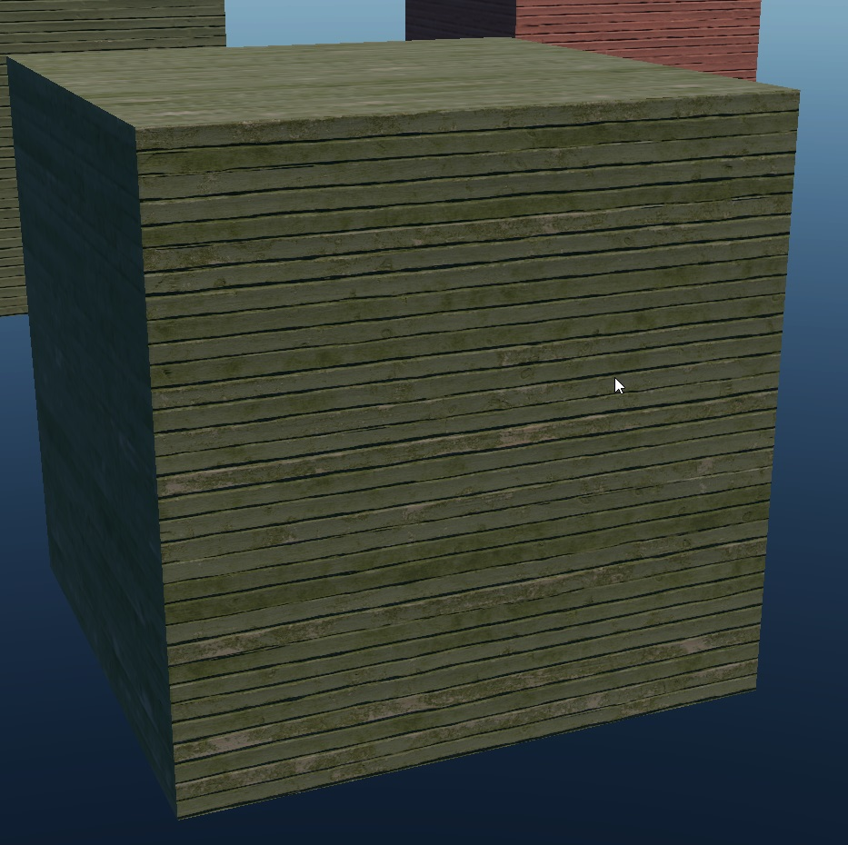
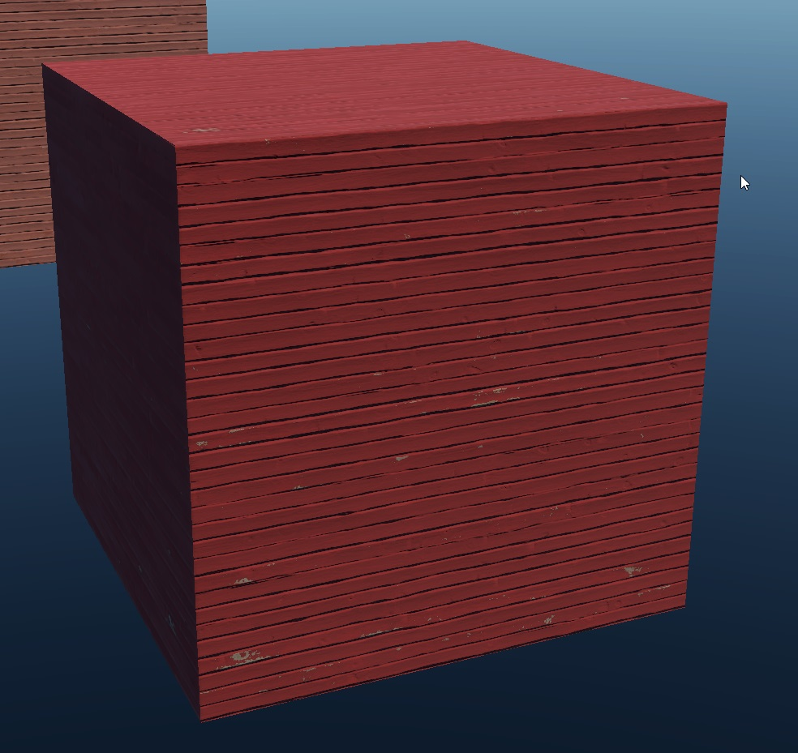
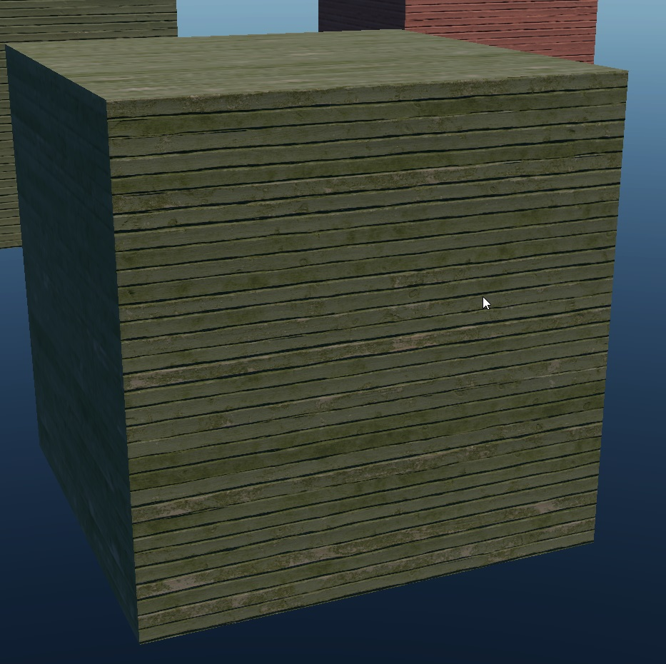
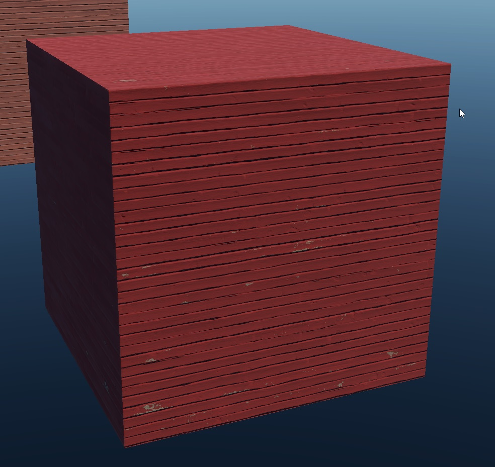

rendinst_mask_layered
Overview
The rendinst_mask_layered shader is designed for rendering instances using two
detail tiles, a global normal map, and an overlay texture (applied using
modulate2x). The details are blended according to their respective heightmaps
and a blending mask provided in the overlay texture.
The primary distinction between this shader and
rendinst_layered is that rendinst_mask_layered uses
only a single UV channel.
Parameters:
script:t="detail_tile=7.1"– Controls the tiling of both detail maps simultaneously. Applies to both details.script:t="invert_height1=1"– (default –0) – Inverts the heightmap of Detail1. This can be a fractional value (e.g.,0.5makes the heightmap gray).script:t="invert_height2=1"– (default is0) – Inverts the heightmap of Detail2 map. This can also be a fractional value.script:t="paint_details=0,0,0,0"– Configures the coloring of the two details.script:t="paint_points=0,1,0,1"– Sets the black and white points for the coloring range of both details.script:t="atest=1"– Enables alpha test.script:t="details_alphatest=0,0.15,0.45,0"– Specifies which detail to apply alpha test on and with what intensity.microdetails– This shader supports the standard syntax used in the rendinst_simple or rendinst_perlin_layered shaders.heightmap blending– For more information on heightmap blending, refer to Blending with Landscape Heightmap.
Material Structure
Slot 1: Overlay Texture The overlay texture is applied over other textures using
modulate2x.RGB Channels: Albedo
Alpha Channel: Blending mask for the details, similar to rendinst_layered.
White pixel: Detail2 (upper)
Black pixel: Detail1 (lower)
Gray pixel: Displays the detail with the higher heightmap value at that location.
Important
If an overlay is created without a blending mask, it defaults to 100% black. As a result, all further material adjustments will be nearly invisible because only Detail1 will be displayed (black in the mask reveals Detail1).
Slot 2: Unused
Slot 3: Global Normal Texture This texture is placed beneath the detail normals, modifying them.
RG Channels: Normal map
B Channel: Not used, should remain black.
Alpha Channel: Smoothness, applied using
modulate2xover the details’ smoothness.
Important
Avoid adding unnecessary smoothness to the global normal unless:
You’re emphasizing specific elements in the overlay, such as adding dirty leaks and configuring their smoothness on the normal’s alpha.
You need to differentiate materials within the same detail, like making car paint matte while keeping the bumper glossy.
The texture is not used uniquely, such as when part of the overlay and global normal is shared with the rendinst_simple shader for elements like headlights or glass.
A common issue is adding smoothness to the global normal, which can override the details’ smoothness, leaving only the most prominent details visible. Unused areas of the global smoothness should remain 50% gray.
Slots 4-5: Detail1 Textures
Slot 4: Diffuse texture for Detail1.
Slot 5: Normal texture for Detail1.
Slots 6-7: Detail2 Textures
Slot 6: Diffuse texture for Detail2.
Slot 7: Normal texture for Detail2.
Parameters
script:t="detail_tile=7.1"– Controls the tiling of both detail maps simultaneously.script:t="invert_height1=1"– (default – 0) – Inverts the heightmap of Detail1.script:t="invert_height2=1"– (default – 0) – Inverts the heightmap of Detail2.Important
Unlike the rendinst_perlin_layered shader, heightmap inversion parameters in
rendinst_mask_layereddo not affect the overall distribution of details. Instead, details are distributed across the model using the blending mask (overlay alpha). Heightmap inversion highlights specific features within those details.If the heightmap is not inverted, white (high) pixels take priority. For example, intact sections of chipped stucco will be visible (as they are higher). If the heightmap is inverted, the damaged sections will become prominent (as they are higher after inversion).
script:t="paint_details=0,0,0,0"– Configures the coloring of the two details (the overlay is not colored).First component: Colors Detail1 (non-integer values can specify intensity).
Second component: Colors Detail2 (non-integer values can specify intensity).
Third component: Not used but must be included for the shader to function correctly.
Fourth component: Selects the row for coloring.
script:t="paint_points=0,1,0,1"– Sets the black and white points for the coloring range of both detail maps.First component: Black point for Detail1, similar to rendinst_simple_painted.
Second component: White point for Detail1.
Third component: Black point for Detail2.
Fourth component: White point for Detail2.
Important
Always specify different values for the black and white points, even if the detail is not being colored. The default configuration should be
script:t="paint_points=0,1,0,1".
Failure to do so may result in identical black and white points, causing a division by zero error:
rendinst_mask_layered: divide by zero [real] while executing shader code. Stopped at operand #45.
This allows you to define a color range for materials with distinct brightness variations, such as painted wood. You can adjust the black and white points to control the color change in the paint layer while keeping the wood layer beneath either unchanged or minimally altered.
 



{kind=link}
{kind=link}
script:t="atest=1"+script:t="details_alphatest=0,0.15,0.45,0":The
atestanddetails_alphatestparameters must be used together to enable and configure alpha test:script:t="atest=1"– Enables alpha test.script:t="details_alphatest=0,0.15,0.45,0"– Specifies which detail to apply alpha test on and with what intensity.
Microdetails function the same as in the rendinst_perlin_layered shader.
See also
For more information, see Microdetails.